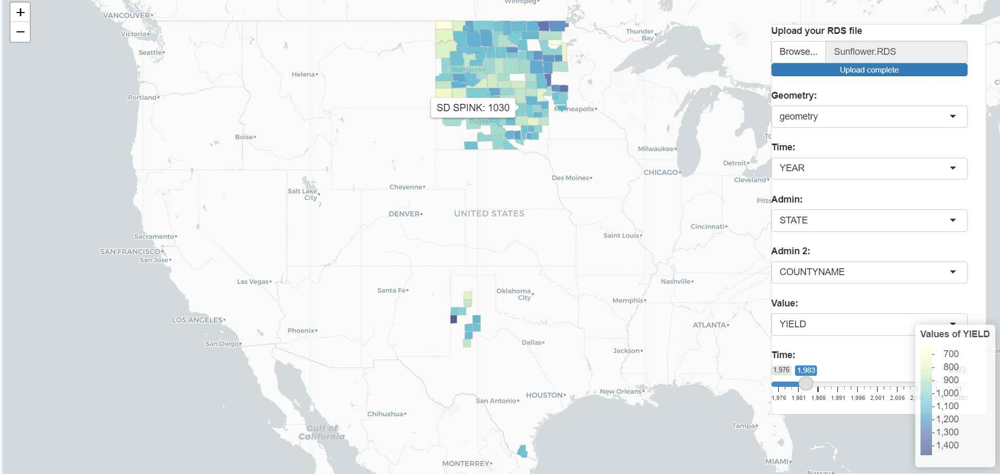

YieldScapeUSA: An Interactive Visualization Tool for Agricultural Yield Data
Overview
YieldScapeUSA serves as a potent interactive visualization tool aimed at illustrating the agricultural yield data across the United States. Initially, the tool was conceptualized to exhibit oilseed sunflower yield data across select counties in North Dakota, South Dakota, and Minnesota. However, with advancements, it now accommodates users to upload and visualize their distinct yield data across varied crops and regions.

Deployment
The application is conveniently deployed on ShinyApps.io, ensuring easy access and interaction. - YieldScapeUSA app
Features
The tool boasts an array of features tailored to enhance user engagement and data analysis:
- Interactive Map: A dynamic map enabling exploration of yield data across different geographical regions.
- Custom Data Upload: Users can upload their own RDS data file to visualize yield statistics for diverse crops and locations.
- Dynamic Selections: The tool allows geometry, time, administrative, and value columns selection from the data to suit analysis needs.
- Dynamic Time Slider: A time slider to view yield data for specific years, dynamically changing based on the data.
- Color-Coded Yield Values: The yield values are color-coded to distinguish between high and low yield areas visually, employing Choropleth maps.
- Detailed Hover Information: Hovering over a region displays detailed yield information, including state and county names alongside yield values.
- Administrative Level Analysis: Visualize average yield trends over time with line plots, faceted by the first level of administrative division.
- Admin 2 Level Analysis: Explore the top 5 counties in terms of total yield with bar plots, faceted by the first level of administrative division.
- Customizable Color Palette: Users can choose different color palettes for the line and bar plots to suit visual preferences.
Data
The app is engineered to visualize user-provided data, fostering a wide spectrum of agricultural yield data representation. This feature morphs the app into a flexible tool for scrutinizing yield trends across different crops and regions over time.
Input Expectations
The app requires data in shapefile format containing spatial information. The column expectations include:
- Geometry Column: Representing the spatial geometry of each data point.
- Time Column: Representing the time dimension (e.g., year) of the data.
- Admin Columns: Representing the first and second levels of administrative division (e.g., State, County).
- Value Column: Representing the yield values or any other values to visualize.
Technologies
The application leverages multiple technologies:
- R: The core programming language used for building the app.
- Shiny: Employed for creating the interactive web application.
- Leaflet: Facilitates rendering the interactive map.
- sf: Utilized for handling spatial data.
Future Expansions
Future versions of YieldScapeUSA aim to integrate:
- Additional Built-in Data Sets: Yield data for other major crops to provide built-in datasets for users.
- Enhanced Filtering and Analytics: Advanced filtering options and analytics for deeper insights into yield trends.
Local Setup
Users can clone the repository to their local machine, set the working directory, install the required R packages, and run the app.R file in RStudio to launch the app locally.
Conclusion
YieldScapeUSA stands as a robust platform for farmers, agricultural researchers, and policymakers to interact with and analyze agricultural yield data, aiding in informed decision-making and promoting sustainable farming practices.